Intelligence Artificielle
- Résolution automatique de problèmes -
Christine Solnon
1997
Remarque préliminaire : ce support de cours correspond à un
module de 20 heures, destiné à des étudiants en deuxième
année d'IUT. Ce cours n'est plus maintenu...
- Problèmes
de plannification
- Problèmes de satisfaction de contraintes (CSP)
- Bibliographie
1. Problèmes de plannification
De nombreux problèmes d'intelligence artificielle, pour lesquels on
ne connait souvent pas d'algorithme déterministe, relèvent du
problème général de plannification : étant donnés
un état initial, un état final et un ensemble d'actions élémentaires
``valides'' permettant de passer d'un état à un autre, l'objectif
est de trouver une séquence d'actions à exécuter pour
passer de l'état initial à l'état final. La résolution
automatique de ces problèmes consiste à essayer successivement
toutes les possibilités jusqu'à trouver une solution. Cette
recherche est fortement combinatoire : à partir d'un état donné,
on peut généralement effectuer plusieurs actions élémentaires
différentes qui débouchent sur des états différents.
L'``intelligence'' consiste à trouver de bonnes règles -- appelées
heuristiques -- permettant de choisir en premier les actions ``ayant le plus
de chance d'aboutir''.
1.a. Qu'est ce qu'un problème de plannification
?
Plus formellement, un problème de plannification sera défini
par un quadruplet 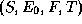tel que
- S est un ensemble (éventuellement infini) d'états,
- 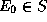est l'état initial,
- 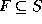est l'ensemble des états finaux,
- T est la fonction de transition qui associe à chaque
état 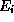de S l'ensemble des couples 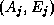tels que 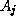est
une action élémentaire permettant de passer de l'étatà l'état 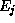.
1.b. Comment résoudre un problème
de plannification ?
Résoudre un problème de plannification consiste
à trouver une séquence
telle que 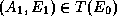, 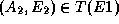, ..., 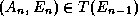et 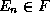.
Pour cela, on peut effectuer une recherche globale et complète a
travers l'espace des états, en construisant un arbre de recherche.
L'arbre de recherche associé au problème est tel que:
- sa racine est étiquetée par l'état initial ,
- chaque noeud est étiqueté par un état de S,
- chaque noeud interne est étiqueté par un état
non final de S-F de sorte que
si 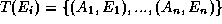, alors a n
fils respectivement étiquetés par 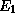, ..., 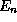.
Une solution d'un problème est
alors un chemin dans l'arbre de recherche associé allant de la racine
de l'arbre à une feuille étiquetée par un état
final.
Remarques:
- Le parcours de l'arbre peut s'effectuer selon différents ordres:
en largeur d'abord, en profondeur d'abord ou encore selon un ordre défini
par des heuristiques.
- Cette recherche peut "boucler", quand une suite d'actions amène
à un état par lequel on est déja passé. Une telle
branche doit alors être coupée.
- Si le problème admet un nombre infini d'états, certaines
branches peuvent être infinies.
Algorithme de plannification en profondeur d'abord:
Construction de l'arbre ``en profondeur'', et recherche de la premiere solution
ayant moins de K transitions.
Schéma d'appel de l'algorithme: cherche(E_0,{E_0},K)
fonctioncherche(E_i, Deja_vus, N)
retourne un booleen
-- cherche(Ei,Deja_vus,N) = vrai
-- s'il existe une solution a (S,E_i,F,T)
en moins de N transitions.
-- Deja_vus est l'ensemble des
etats par lesquels on est passe pour aller de E_0 a E_i.
debut
si E_i
est un etat final de F alors retourner vrai finsi
si N=0 alorsretourner
faux finsi
Pour tout couple (A_j,E_j)
faisant partie de T(E_i)
et tel queE_j
n'appartienne pas a Deja_vus faire
si cherche(E_j,
Deja_vus U {E_j},N-1)=vrai
alors afficher(A_j,E_j)
retourner
vrai
finsi
finpour
retourner faux
fin
1.c. Différents types de problèmes
de plannification
On distingue essentiellement trois types de problèmes de plannification
:
- les problèmes de recherche d'une solution quelconque (la
première trouvée). Dans ce cas, il s'agit de construire un arbre
de recherche jusqu'à trouver la première feuille succès.
La construction de l'arbre peut se faire dans un ordre fixé à
l'avance (généralement en profondeur d'abord) ; mais on peut
aussi introduire des heuristiques guidant la recherche et permettant d'explorer
en premier les branches de l'arbre qui apparaissent comme plus prometteuses.
- les problèmes de recherche de toutes les solutions. Dans
ce cas, il s'agit de trouver toutes les feuilles succès, et l'arbre
doit être construit dans sa totalité. Ce type de problème
peut être optimisé en introduisant des règles permettant
de couper le plus tot possible les branches ne menant à aucune feuille
succès.
- les problèmes de recherche de la "meilleure" solution
(en fonction d'un critère donné). Dans ce cas, il faut construire
l'arbre dans sa totalité pour trouver toutes les solutions et choisir,
parmi toutes les solutions, la meilleure. Là encore, certaines branches
peuvent être coupées, dès lors que l'on est certain qu'elles
ne mènent à aucune feuille succès, ou qu'elles mènent
à des solutions moins bonnes qu'une solution déjà trouvée.
1.d. Exemples de problème de plannification
2. Problèmes de Satisfaction de Contraintes
De nombreux problèmes sont définis en termes de contraintes
(de temps, d'espace, ... ou plus généralement de ressources):
- les problèmes de planification et ordonnancement: planifier
une production, gérer un trafic ferroviaire, ...
- les problèmes d'affectation de ressources: établir un
emploi du temps, allouer de l'espace mémoire, du temps cpu par un
système d'exploitation, affecter du personnel à des tâches,
des entrepôts à des marchandises, ...
- les problèmes d'optimisation: optimiser des placements financiers,
des découpes de bois, des routages de réseaux de télécommunication,
...
- etc., ...
Ces différents problèmes sont désignés par le
terme générique CSP (Constraint Satisfaction Problems), et
ont la particularité commune d'être fortement combinatoires:
il faut envisager un grand nombre de combinaisons avant de trouver une solution.
La programmation par contraintes est un ensemble de méthodes et algorithmes
qui tentent de résoudre ces problèmes de la façon la
plus efficace possible.
2.a. Qu'est ce qu'un CSP ?
Un CSP (Problème de Satisfaction de Contraintes) est un problème
modélisé sous la forme de contraintes.
Définition
Un CSP est un triplet (X,D,C) tel que
- 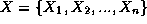est un ensemble de n variables.
- D est la fonction qui associe à chaque variable 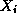son domaine
 , i.e.,
l'ensemble des valeurs que peut prendre .
, i.e.,
l'ensemble des valeurs que peut prendre .
 est un ensemble de contraintes. Chaque contrainte est une relation entre les valeurs que peuvent prendre simultanément
des variables.
est un ensemble de contraintes. Chaque contrainte est une relation entre les valeurs que peuvent prendre simultanément
des variables.
Définition
Une affectation est un ensemble de couples variable/valeur
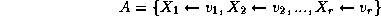
tel que 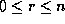et 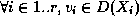.
Une affectation est partielle si elle ne concerne qu'une partie des
variables de X, et totale si elle concerne toutes les variables
de X.
Une affectation A est valide par rapport à un ensemble
de contraintes C si pour toute contrainte de C, la relation définie par est vraie pour les valeurs des variables définies
dans A.
Définition
Une solution d'un CSP est une affectation totale et valide.
2.b. Comment résoudre un CSP ?
Certains CSPs bien délimités peuvent être résolus
par des algorithmes spécialisés. Ces algorithmes tirent parti
de leur connaissance sur la forme des contraintes ou sur le domaine des variables
(CSP numériques, CSP booléens). L'objet de ce cours n'est pas
d'étudier ces algorithmes spécialisés, mais de voir
un certain nombre d'algorithmes généraux, qui peuvent être
appliqués à n'importe quel CSP sur des domaines finis. Ces
algorithmes sont parfois moins efficaces que des algorithmes spécialisés,
mais ils peuvent être appliqués directement. Ces algorithmes
sont notamment implémentés dans Charme, Chip, Ilog solver,
Spart, clp(FD), PrologIV et Oz.
D'une façon générale, un CSP est un cas particulier
de problème de plannification: les états sont des affectations
valides (partielles ou totales), l'état initial est l'affectation
vide, l'ensemble des état finaux est l'ensemble des affectations valides
et totales, on passe d'un état à un autre en affectant une
variable non encore affectée. De façon plus formelle, le CSP
(X,D,C) correspond au problèmetel que:
- 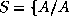est une affectation valide (partielle ou totale)
de 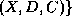
- 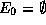,
- 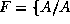est une affectation valide et totale },
- 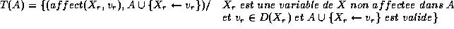
Remarques:
- Le résultat qui nous intéresse est l'état final
obtenu (i.e., l'affectation totale et valide), et non l'enchaînement
d'actions qui a permis de l'obtenir.
- Toutes les solutions d'un CSP sont généralement également
bonnes et ont la même taille. Par conséquent, les heuristiques
sont introduites non pas pour trouver une meilleure solution, mais pour trouver
plus rapidement une solution.
- Il y a un nombre fini d'états et on ne peut pas passer 2 fois
par un même état. Par conséquent, l'arbre de recherche
est forcément fini (on n'a pas besoin de limiter la profondeur de l'arbre
ni de vérifier que l'on ne passe pas 2 fois par le même état).
L'algorithme "simple backtrack"
Principe: On affecte successivement des valeurs aux variables. A chaque fois
qu'on affecte une valeur à une nouvelle variable, on vérifie
que la nouvelle affectation est valide. Cet algorithme correspond à
un parcours en profondeur d'abord de l'arbre de recherche.
fonction simple_backtrack( X,D,C ) retourne une affectation
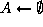
Pour i de 1 a n faire
/* l'affectation partielle 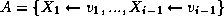 est valide */
Choix (*) d'une valeur 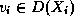 ,
si 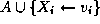 est valide alors 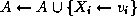
sinon retour arriere au dernier point de choix (*) finsi
finpour
retourne A
Cet algorithme permet de construire de façon incrémentale une
suite de valeurs cohérentes entre elles. Cet algorithme peut être
amélioré, notamment:
- en supprimant dans les domaines des variables non affectées
les valeurs qui sont incompatibles avec l'affectation partielle courante:
utilisation de techniques d'anticipation (``look ahead'') par vérification
en avant (``forward checking'') ou maintien de la consistance d'arc (``arc
consistency''), ou autre consistance partielle,
- en affectant les variables dont le domaine est le plus petit en priorité,
- en faisant des retours arrières non pas au dernier point de
choix, mais à des points de choix ``critiques'' (à l'origine
de l'échec).
L'algorithme d'``anticipation par vérification en avant''
Principe: On affecte successivement des valeurs aux variables. A chaque fois
qu'on affecte une valeur à une nouvelle variable, on supprime du domaine
des variables non affectées les valeurs qui ne sont pas compatibles
avec l'affectation partielle.
fonction anticipation( 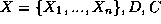 ) retourne une affectation
Pour i de 1 a n faire
/* l'affectation partielle est valide */
/* et 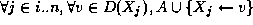 est valide */
Choix (*) d'une valeur ,
Pour j de i+1 a n faire
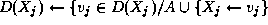 est valide }
si 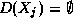
alors retour arriere au dernier point de choix (*) finsi
finpour
finpour
retourne A
L'algorithme ``choix du plus petit domaine''
Principe: A chaque itération, on choisit d'affecter la variable dont
le domaine est le plus petit, puis on restreint les domaines des variables
non affectées par vérification en avant.
fonction min_domaine( ) retourne une affectation
Pour i de 1 a n faire
Soit 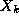 la variable de X non affectee dans A
et telle que la taille de 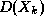 soit minimum
Choix (*) d'une valeur 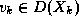 ,
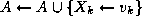
Pour toute variable 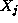 de X non affectee dans A
faire
est valide }
si
alors retour arriere au dernier point de choix (*)
finsi
finpour
finpour
retourne A
2.d. Exemples de CSP
Christine SOLNON
Thu Jul 10 10:26:38 METDST 1997